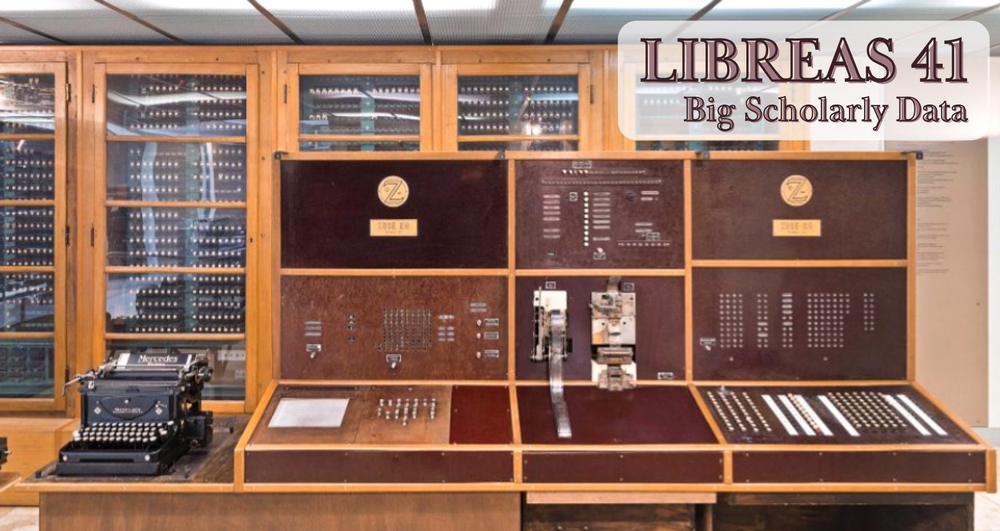

<h1><a href="inhalt/">LIBREAS #41 | Big Scholarly Data</a></h1>

<p><a href="inhalt/"></a></p>
<p><small>Bildquelle: Deutsches Museum, <a href="https://digital.deutsches-museum.de/de/digital-catalogue/collection-object/74692/#19">Programmgesteuerte Rechenanlage Zuse Z4</a>. <a href="https://creativecommons.org/licenses/by-sa/4.0/deed.de">CC BY-SA 4.0</a></small></p>